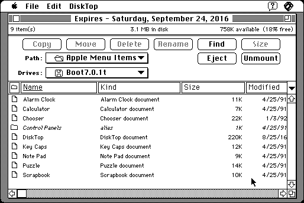

Download
disktopdemo.zip (496K) DiskTop 4.5.3 (Demo) repackaged into a zipped hfs disk image and checksum file. The disk image can be mounted with Mini vMac.
disktopdemo.smi.hqx (897K) DiskTop 4.5.3 (Demo) in the original format.
copyright: Prairie Group, Inc.
mod date: Jun 15, 1999
license: free demo for commercial product
from url :
DiskTop
Provides most of the functions of the Finder in a desk accessory. This is most useful pre System 7 without multifinder. But also people who prefer browsing files in a single window rather than the original mac os finder interface might like this. “demo requires System 7 or higher”. Full version only needs “System 6.0.4 or higher”. By Gil Beecher.

If you find these downloads useful, please consider helping the Gryphel Project, which hosts them.
Here are the md5 checksums for the downloads, signed with Gryphel Key 5:
--------- GRY SIGNED TEXT --------- 00414dadbd8c59ae4d7f1f4da222186c disktopdemo.zip 4d00ff7e4a7b0e851cf7b307df9fe063 disktopdemo.smi.hqx ------- BEGIN GRY SIGNATURE ------- Gry/4Xa8CFcUzxdN/Lr31N2igzph+e6WedACoXRsK0BZHo0HV4m0JRE01bxAsO3U mLi5QfIn1wp/z0c2vtxiwe8hiDIBsPcOTx14hrkV37+q3+aC4JfB29RPye+gtUOi vWj+5oaZt1VU1Xjp45GdRcdNQ8Hv0aMiw9Is6QXOQp94LEeyLEH2etuugiu+MT44 -------- END GRY SIGNATURE --------